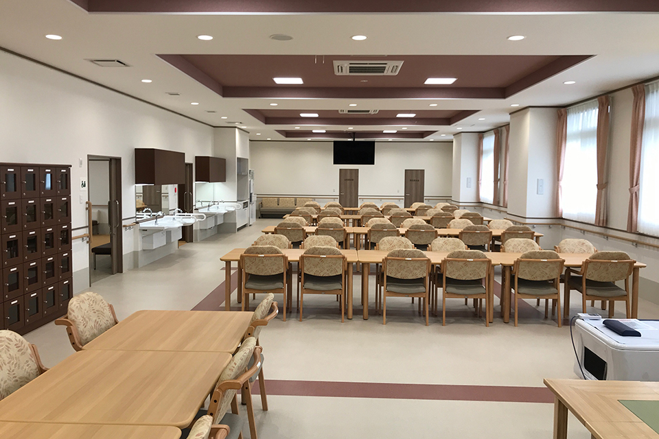
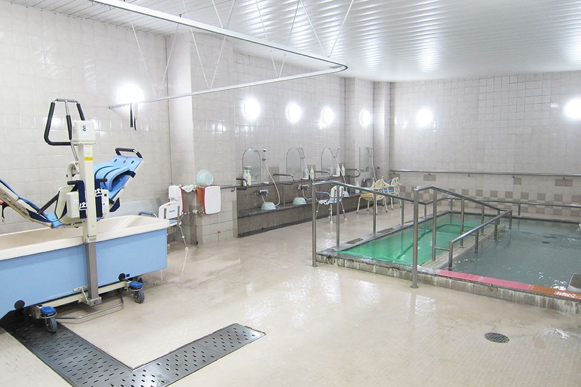
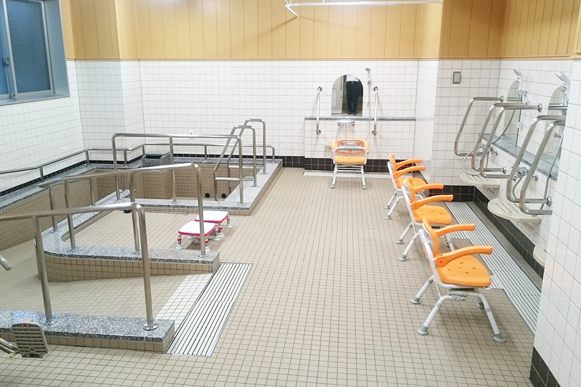
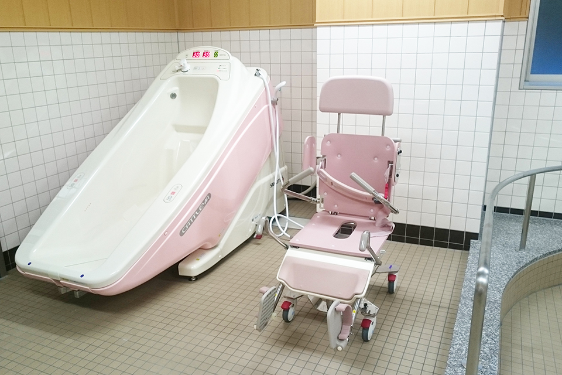
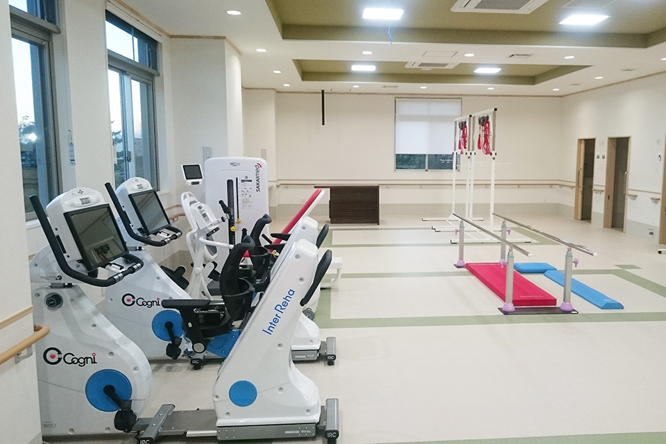
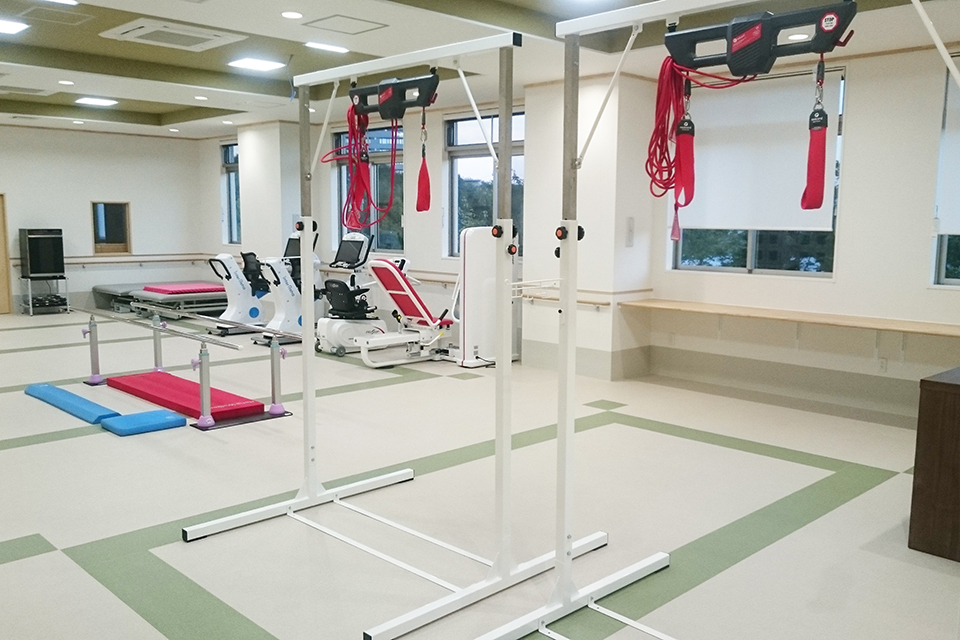
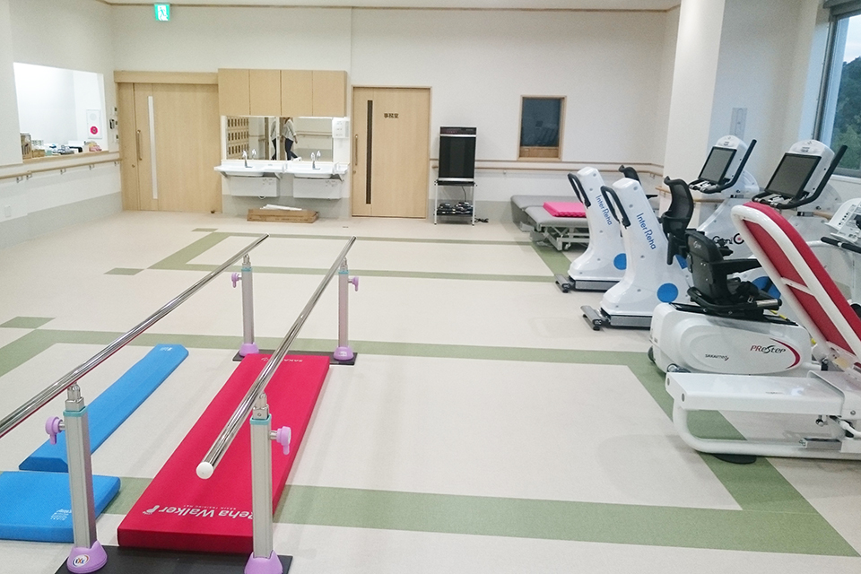
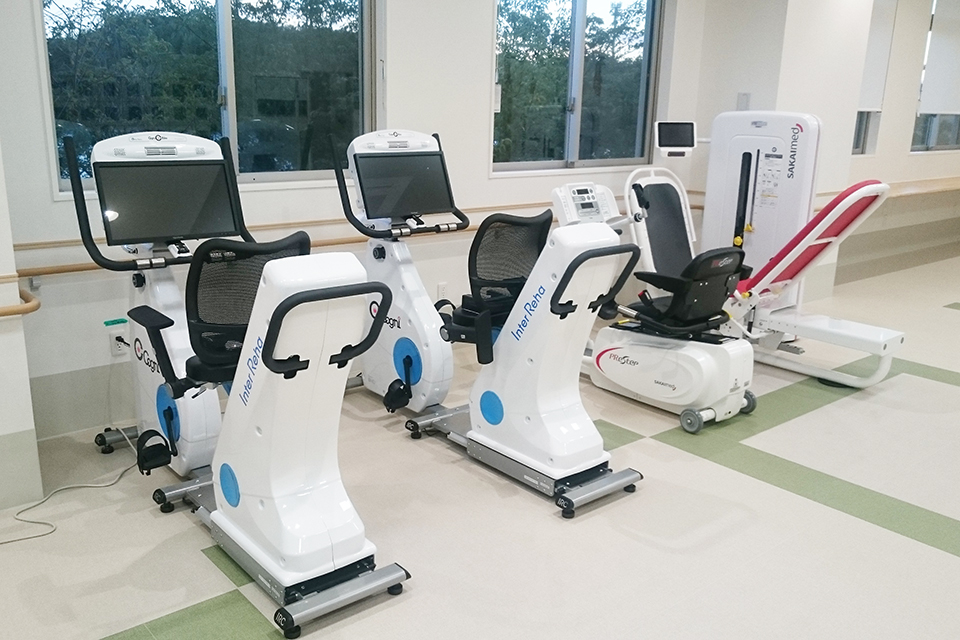

デイサービス

一般デイサービス
もしもの時にも充分な体制で。
安心の介護サービスです！
デイサービスでは、介助・介護が必要になった場合に、看護師や介護ヘルパーが親身になってお世話をいたします。
また、楽しいレクリエーションや音楽を使っての認知症予防や機能回復訓練、温泉への入浴、季節行事などを行っています。ボランティアによる演奏会や、落語、マジックなどもお楽しみいただけます。
お一人おひとりの身になって、その方にあわせた快適な介護を心がけています！




ご利用案内
2021年1月からみよし市の方の受入れを開始しました。
| ところ | ほっとかん 東館 デイサービスセンター |
|---|---|
| 営業日 | 月・火・水・木・金・土（祝祭日も実施） |
| 持ち物 |
|
| 受入れ可能地域 | 豊田市、みよし市（詳細な対応範囲については直接お問い合わせください） |
一日のスケジュール
| 8:40 | ほっとかんを送迎バスが出発 |
|---|---|
| 9:00 前後 | ご利用者宅へお迎え |
| 9:30 | ほっとかんへ到着
|
| 11:50 | 昼食前に嚥下体操 |
| 12:10 | 昼食休憩 |
| 13:00 | 午後入浴 |
| 14:50 | レクリエーション |
| 15:30 | お茶とおやつの時間 |
| 16:05 | 帰りの会 |
| 16:30〜16:45 | ほっとかんを送迎バスが出発 |
| 17:15 前後 | ご利用者宅へ到着 |
- １日のスケジュールは変更することもございます。
- 利用中止のご連絡を前日の17時以後にいただいた場合については、食事代をご負担いただきます。
- 振替日利用可能（前もってご連絡頂ければ別の曜日にご利用できます。）
- 他の利用者様に食べ物（お菓子等）をお渡しすることをお控えください。
一般デイサービスのお問い合わせ
株式会社豊田ほっとかん デイサービスセンター
〒471-0046 愛知県豊田市本新町7丁目48番地6
リハビリデイサービス
機能訓練特化型デイサービス
手足や各部の衰えを予防することに特化したデイサービスになります。
最新の機器を導入し、理学療法士や作業療法士がお客様に合った運動プログラムを作成、レクチャーするため、安心でより効果的に体を動かしていただけます。
また、施設の目の前にある割目池遊歩道を歩行訓練に活用したり、フロア内にカフェスペースを設けるなど、楽しみながら運動できるような環境を整えてまいります。




ご利用案内
2021年1月からみよし市の方の受入れを開始しました。
| ところ | ほっとかん東館 １階 リハビリデイサービスセンター |
|---|---|
| 営業日 | 月・火・水・木・金（祝祭日も実施） （注）年末年始はお休みです。 |
| 持ち物 |
|
| 受入れ可能地域 | 豊田市、みよし市（詳細な対応範囲については直接お問い合わせください） |
一日のスケジュール
【午前の部】
| 9:00 前後 | ご利用者宅へお迎え |
|---|---|
| 9:30 | ほっとかんへ到着
|
| 10:00 | 朝の会 |
| 10:15 | 機能訓練 |
| 12:25 | 帰りの会 |
| 12:30 | ほっとかんを送迎バスが出発 |
【午後の部】
| 13:00 前後 | ご利用者宅へお迎え |
|---|---|
| 13:30 | ほっとかんへ到着
|
| 14:00 | 朝の会 |
| 14:15 | 機能訓練 |
| 16:25 | 帰りの会 |
| 16:30 | ほっとかんを送迎バスが出発 |
- １日のスケジュールは変更することもございます。
- 振替日利用可能（前もってご連絡頂ければ別の曜日にご利用できます。）
- 他の利用者様に食べ物（お菓子等）をお渡しすることをお控えください。
リハビリデイサービスのお問い合わせ
株式会社豊田ほっとかん リハビリデイサービスセンター
〒471-0046 愛知県豊田市本新町7丁目48番地6
デイ空き情報・レクリエーション予定表
デイサービスのご利用・見学のご相談
一般デイサービス 0565-36-3008／リハビリデイサービス 0565-41-3180